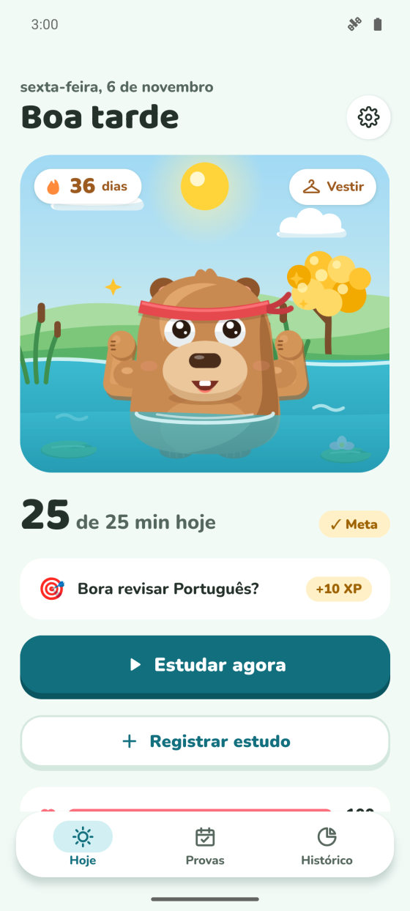

CapyFoco
Estude todo dia com uma capivara que cresce com você.
Cronômetro de foco, ofensiva diária e contagem para as provas. Quanto mais você estuda, mais feliz e forte a sua capivara fica.

Como ajuda
Meta do dia e ofensiva
Escolha quantos minutos estudar por dia. Cumpriu, a ofensiva sobe e a capivara comemora.
Foco de verdade
Cronômetro com três modos. No Modo Protegido, a capivara aparece por cima dos apps que você quer evitar.
Provas na mira
Cadastre a prova e veja os dias que faltam. Todo dia sai uma missão com a matéria que mais precisa de atenção.
Sua capivara, seu estilo
Ganhe XP estudando e troque por roupas e acessórios.
Perguntas frequentes
O CapyFoco é grátis?
Sim. O app é grátis com anúncios. O Premium (opcional) tira os anúncios e libera o Modo Protegido, o silêncio de notificações no foco e 3 protetores de ofensiva por mês.
Preciso criar conta?
Não. Seus dados ficam no seu celular. Se quiser, dá para sincronizar com o seu próprio Google Drive.
Funciona para o ENEM e vestibular?
Sim. Você cadastra a data da prova, acompanha a contagem regressiva e recebe lembretes 7, 3 e 1 dia antes.
Contato: osamdemendes@gmail.com